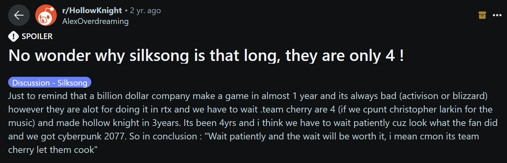

ICT field of work article
SilkSong
I find it very admirable that this small company with only 4 developpers was able to make such an awesomw game that everyone loves and has been waiting for it for so long, even if we did have to wait 7 years, but it's definetly worth the wait.
And the music and animation for the game are an exceptional work given how small the team is.
Plus you can see how the community is very respectcful and supportive towards their work, since this game has no anti-pirating but no one is even willing to play that version and even wanting to pay more than the original price.
This inspires me to also do my best so that one day maybe I could also make a small group and create something awesome as well.
Link to the reddit post:r/HollowKnight